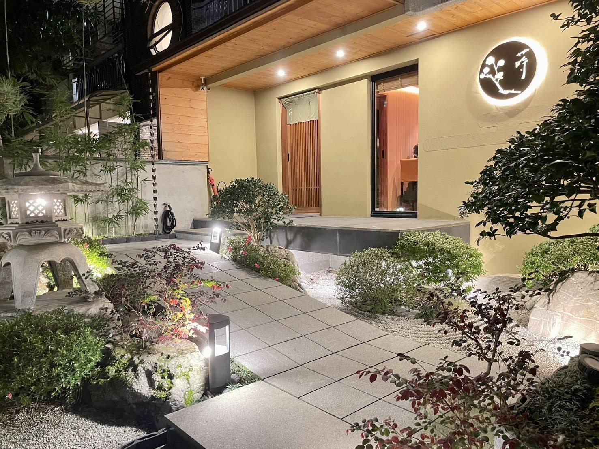
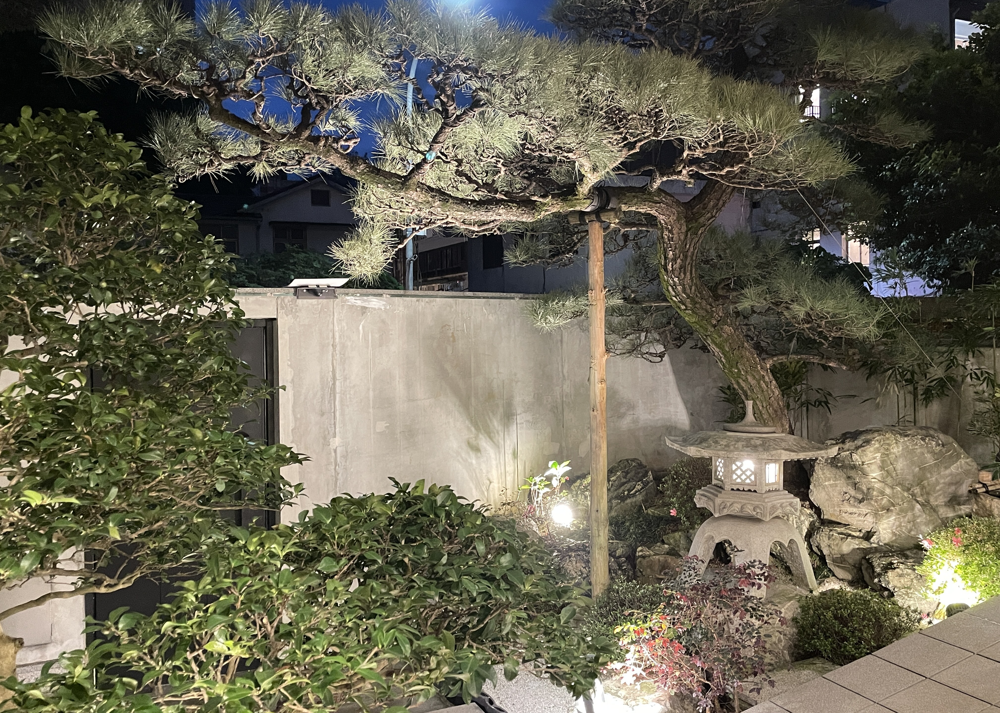

蒔
預約制 無菜單私廚料理
運用世界各地時令食材，呈現季節料理與美學
日式割烹結合異國料理手法
禪意空間
枯山水庭園，靜謐而深邃
在料理之前，先感受空間的禪意與美學

枯山水
一方庭園，盡現四季流轉
步入之際，心境已然靜謐

"A journey begins with tranquility"
品牌定位
預約制 無菜單私廚料理
運用世界各地時令食材，呈現季節料理與美學
日式割烹結合異國料理手法
用餐形式
板前座位
料理風格
日式割烹
食材來源
世界時令

主廚理念
以日式割烹為基底，融合世界各地烹飪技法
追求食材本質，呈現季節最純粹的風味
每一道料理都是與食客的對話
在板前的距離中，分享料理的溫度與故事
「料理不僅是技術的展現，更是情感的傳遞
希望每一位來訪的客人，都能在此刻感受到
食材、季節與人之間的美好連結」
世界各地
食材精選
日式割烹
技法融合
無菜單
創意料理
訂位資訊
營業時間
入場時間：18:15
開餐時間：18:30
套餐價格
NT$6,800 / 人
（需預付訂金）
訂位需知
僅供應晚間套餐，線上訂位須綁定信用卡NT$6,800/人
訂位成功後會收到預綁訂金連結，逾期未完成即取消訂位
訂位日前五日取消訂位，將不收取任何費用
訂位當日未出席用餐者將視為取消訂位，並收取全額餐費，亦無法挪至下次使用
當日不提供增減位及改期服務
如有過敏食材請於訂位時告知，無法因喜好因故調整菜單內容
餐點食材以當季海鮮與肉類為主，不提供素食、蛋奶素、無麩質、完全不吃海鮮等客製化餐點
有過敏需求請務必於訂位時註明
套餐生食與熟食比例大約為各佔一半，無提供全熟食套餐，可炙燒，請於訂位時提前告知
座位為板前形式，無獨立包廂
恕不接待12歲以下孩童
為尊重其他顧客權益，餐廳禁止攜帶寵物
因不可抗因素或意外，餐廳保留取消或更改預約之權利
完成訂位即視同同意所有規範
用餐需知
本場所全面禁菸，電子菸亦屬禁菸範圍
請勿過度使用香水、古龍水等各類具散發強烈氣味之產品
入場時間為18:15
統一開餐時間為18:30，座位保留30分鐘
遲到超過30分鐘，將無法補上已出餐點，提早離開未用餐食也無法打包，敬請見諒
餐點為現場品嚐設計，基於食品安全與衛生考量，恕不建議打包，敬請見諒
為確保餐點最佳品質，餐廳有權依季節或食材供應調整菜單，以當日提供為準
店內提供多款特選清酒、香檳、紅白酒、啤酒、利口酒及軟性飲料
餐廳位置
106 臺北市大安區濟南路三段39-1號